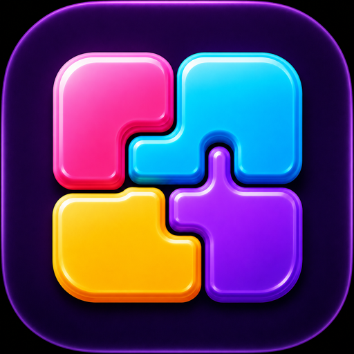

BloxiqAS-Dreams
Privacy Policy
Last updated: October 26, 2026
Bloxiq Block Puzzle is developed by Atilla SEFER (AS-Dreams). This policy explains the information handled by the game and its advertising services.
Game Progress and Device Permissions
The game does not require a player account. Progress, scores, and settings are saved locally on your device. We do not operate a player-account or game-progress server. Removing the app can remove this local progress.
The game does not request access to your contacts, photos, camera, microphone, or precise device location. Advertising services may estimate your approximate location from your IP address.
Advertising and Data Shared with Google
Bloxiq displays banner, interstitial, and optional rewarded ads using Google AdMob / Google Mobile Ads. The advertising SDK may collect and share IP addresses and approximate location, device or advertising identifiers where permitted, ad views and clicks, app interactions, and crash, diagnostic, and performance data. Google uses this information to deliver and measure ads, support advertising analytics, and detect fraud and abuse.
Non-personalized ads can still involve data collection and processing. For details about Google's processing and retention, see Google's Privacy Policy and How Google uses information for advertising.
Your Advertising Choices
On iOS, the current release requests App Tracking Transparency permission before starting the ad-consent flow or loading ads. If you allow tracking, ad requests may permit personalized advertising, subject to Google's consent requirements. If you decline tracking, the app requests non-personalized ads. You can play without granting tracking permission. You can review the tracking choice in your device's Settings under Privacy & Security > Tracking.
On Android, the current release is configured to request non-personalized ads. Google User Messaging Platform presents consent choices where required. Where the in-game Settings menu offers privacy options, you can use them to review your available ad-consent choices. Your device may also provide controls for advertising identifiers.
Support and Privacy Requests
If you contact support by email, we receive your email address and the information you choose to send. Please do not send passwords or other sensitive information. For support or privacy questions, contact atillasefer@gmail.com. For data processed by Google, the links above describe Google's privacy controls and request options.
Children's Privacy
Bloxiq does not knowingly request personal information directly from children. Advertising data may be processed as described above. If you are a parent or guardian with a privacy concern, please contact us.
Changes to This Policy
We update this page when the game's data handling changes. The date above identifies the most recent update. You can also visit our support page.